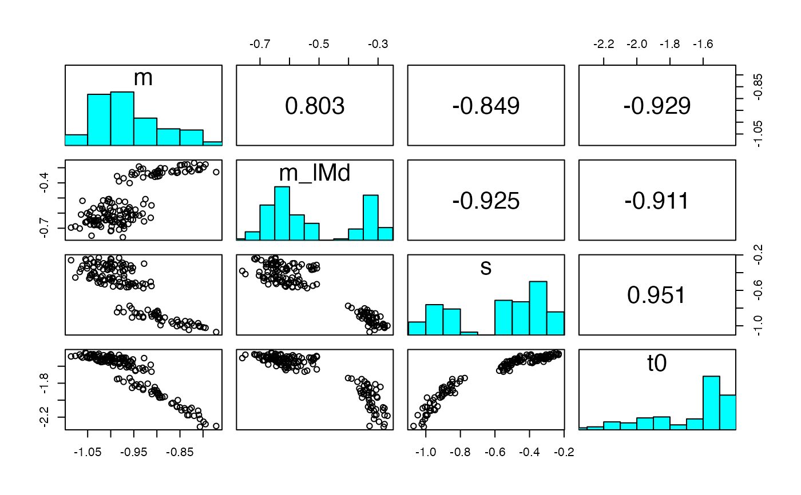
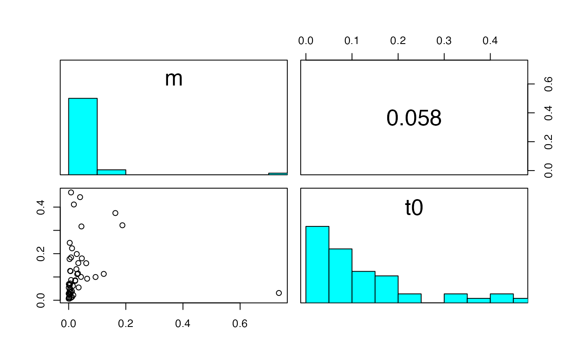

pairs_posterior.RdPlots within-chain parameter correlations (upper triangle) and corresponding scatterplots (lower triangle) to visualize parameter sloppiness.
pairs_posterior(
emc,
selection = "alpha",
scale_subjects = TRUE,
do_plot = TRUE,
N = 500,
...
)An emc object
A Character string. Indicates which parameter type to
plot (alpha, mu, variance, covariance, correlation).
Boolean. To standardize each participant with selection = "alpha",
by subtracting the mean and divding by the standard deviation. This ensures the plot has every participant on the same scale.
Boolean. Whether to plot the pairs plot, if FALSE, only the correlations
are returned.
Integer for maximum number of iterations used (defaults to 500). If number of samples in stage or selection exceeds N, a random subset will be taken of size N
Optional arguments that can be passed to get_pars
Invisibly returns a matrix with the correlations between the parameters.
If selection = alpha the parameter chains are concatenated across participants,
(after standardizing if scale_subjects = TRUE) and then correlated.
# \donttest{
# Plot the sloppiness for the individual-level subjects
pairs_posterior(samples_LNR, selection = "alpha")

# We can also choose group-level parameters and subsets of the parameter space
pairs_posterior(samples_LNR, use_par = c("m", "t0"), selection = "sigma2")

# }